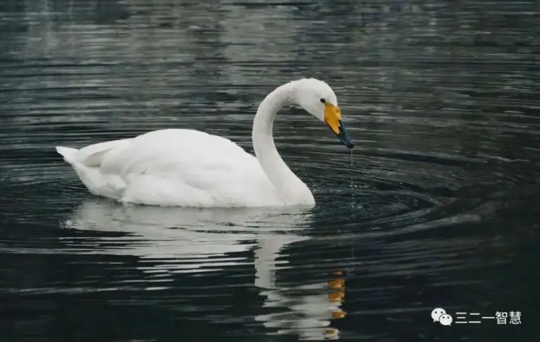

引言：我们误解创造力太久了
创造力究竟是什么？这是一个在当代被频繁使用的词汇。我们在教育里强调它，在商业中追求它，在艺术里膜拜它，在管理中培训它。在各类课程、书籍、方法论中，它几乎成了所有成功的代名词。
但越是被滥用的词，往往越是被误解。
“创造力”这个概念已经在大众话语中严重“概念通胀”了。它常常被描述为一种“天赋”、“个性特征”或“心理潜能”，似乎它是某些“特别的人”才拥有的禀赋。而在社会结构中，创造力又被工具化为某种可被测量、训练、激发的“生产因子”——它变成了企业追求的创新力、艺术家捍卫的灵感源、学生简历上必须出现的“软技能”。
但我们很少认真追问：
❓ 创造力，究竟是“从哪里来”的？
❓ 它是内在的、外在的？是心理的、结构的？是自然的、文化的？是偶发的、可再现的？
❓ 它的结构是什么？它的生成机制是什么？我们真的理解它吗？
这正是本书想要重新解答的问题。但我们必须先从哲学深处动手术，剥离出一个我们一直忽视、却牢牢控制着创造力概念的隐性逻辑根源——那就是“发现学结构”。
一、什么是“发现学结构”？——我们思想深处的隐秘设定
“发现”听起来是个中性的词，但其实它是一种哲学结构。所谓“发现学”（epistemologyof discovery），是指一切知识与创造行为，都建立在一个隐含前提上：对象是预先存在的，而主体的任务是“揭示、找到、发现”这个对象。
这听起来再自然不过了。毕竟，自我们接受教育以来，从语文、数学、物理、历史，到艺术、伦理、科技，几乎所有学科都在强化一种共同的结构逻辑：
世界是已经存在的；
真理是已经在那里的；
你要做的不是“创造”，而是“发现”它们；
创造力，只是“发现的高级形式”。
这正是“发现学结构”的本体论根基：对象先存、真理隐藏、主体揭示、意义解释。
而我们所有对“创造力”的认识，几乎都被这个结构紧紧包裹着——即使我们并未意识到。
二、西方哲学如何塑造了“创造力=发现”的大传统？
我们不妨快速回顾一下西方哲学史中影响至深的几位思想家，看看他们如何为这一“发现主义创造观”搭建了思想大厦。
1. 柏拉图：理念回忆 = 灵魂发现真理
在柏拉图看来，真正的知识并不是经验中“新造”的，而是灵魂对“理念世界”的回忆。也就是说，一切真正的“创造”其实是“记起”了原本就存在于“理性天国”的真理。艺术家不是创造者，而是“理念的转译者”；哲学家不是构造者，而是“真理的发现者”。
这直接将“创造行为”套牢在“先验真理”的框架中。
2. 笛卡尔与康德：理性揭示世界的结构
到了笛卡尔与康德，理性主义与先验主义将“发现学结构”推进到形式极致：
笛卡尔通过怀疑方法找到了“我思故我在”的理性起点，认为人的理性可以逐步发现宇宙的基本真理。
康德则将“对象”变成“物自体”，认为主体的理性结构（范畴）决定了我们如何认识世界。虽然康德已注意到主体的重要性，但他依然维持“世界是有秩序的，对象是待揭示的”。
创造力因此被降格为“认识结构的运用”或“理性规律的展开”。
3. 逻辑实证主义与科学主义：“揭示自然规律”的终极形式
20世纪的科学哲学，尤其是逻辑实证主义，把“创造”彻底还原为“理论对客观世界的描述优化”：
创造力 = 假设–验证–归纳–模型调整；
所有科学活动的目标 = 发现世界的真实规律；
所谓创新，是对现有规律的“更有效描述”。
这就是“对象–规律–逻辑–描述”的创造闭环。在这里，创造不再是一种发生，而是“揭示的效率问题”。
4. 现代教育中的“创造力误解”
今天的教育系统将创造力当作一种可评估的能力，但其逻辑仍然脱不开“发现结构”：
学生被训练去“发现规律”“总结要点”“归纳模式”“写出感想”；
所谓创新思维，其实往往只是“多角度发现旧结构”。
例如，“创意作文”的核心仍是模板化比喻、套路化节奏，而“科技创新”的重点仍是“优化已有方案”。
在这样的系统中，真正的结构创造被系统性排除。
三、发现结构的五大误导：创造力的“被偷换”
我们可以总结出“发现学结构”对创造力的五重误导，它们长期统治着教育、科学、技术与艺术：
1. 创造力=寻找答案：但真正的创造从不寻找答案，而是重新设定问题本身。
2. 创造力=揭示真理：但真理本身就是结构的选择，不是对象的“原型”。
3. 创造力=优化路径：但优化是技术行为，创造是路径生成行为。
4. 创造力=提升效率：但很多创造反而“降低效率”，但开启了新世界。
5. 创造力=主观能力：但创造往往不是“属于主体”的能力，而是“结构中的呼吸节奏”。我们之所以被这些误导深深套牢，是因为我们从未真正质疑过“对象先存”的假设。
四、创造力的真正挑战：不是找到什么，而是发生什么
如今，我们正处于“发现主义创造观”破产的时代：
科学家面对“元模型困境”：模型越来越复杂，却解释力越来越低；
艺术家面对“风格枯竭”：从现代主义到后现代，再到模仿AI作品，已经形成复刻循环；
社会制度面对“再组织无力”：新政策、新教育、新结构不断失败，因为它们都依赖于“旧对象再塑”的思维方式。
这些危机并不意味着“创造力消失了”，而是意味着“旧的创造力模型失效了”。
我们不再需要“如何找到灵感”的答案。我们真正需要的是：
创造力的哲学重构。
五、提出命题：创造力不是发现什么，而是对“发现本身”进行“发生的革命”
因此，我们要提出全新的哲学命题：
✅ 创造力不是一种“找到”的行为，而是一种“生成”的结构过程。
也就是说：
创造力不是去揭示什么已经在那里，而是让什么第一次在那里；
创造力不是从既有路径中选一条，而是生出一条别人从未设想的路；
创造力不是对既有概念的重组，而是在张力中完成结构呼吸，让新概念显现。
这需要我们从根本上放弃“发现对象”的逻辑，转而进入：
🌱 结构的生成学（生成=发生=张力–路径–闭环）。
本书就是沿着这一主张展开的：不是“如何更好地发现”，而是如何“从裂缝中生成新的结构”。
创造力，不是灵感，而是一次对整个“发现学传统”的深层发生学革命。
而这一革命，才是真正的创造之始。
第一章：从“发现学”走向枯竭的创造逻辑
创造力，这个看似充满活力的概念，在今天正遭遇一场内在的危机。它的外壳被广泛使用，甚至消费化，而其内部结构却正走向一种深刻的空心化。而要理解这种危机的根源，我们必须揭开一个被深深隐藏的哲学结构：那就是“发现学”（epistemology ofdiscovery）的创造力观。
所谓“发现学”，不是指科学方法中的某种技术手段，而是一整套隐藏在人类知识体系、艺术创作逻辑、教育结构与社会认知中的基础设定。它的核心假设是：
“世界是由一组先验存在的对象构成，创造的任务，是把这些对象一个个‘发现’出来。”
这一假设听起来理所当然，甚至显得“无可置疑”。但正是这种看似稳固的思维架构，正逐步将创造力逼入死角。
一、发现学的四重结构设定：创造=揭示
我们不妨先对“发现学”的逻辑结构做出分解，揭示其在不同领域中的表现：
1. 哲学上：真理是“预设的”，哲学家的任务是“揭示本体”。
从柏拉图的理念世界、到康德的物自体，再到休谟、赫拉克利特和海德格尔所设定的“存在本质”，都建立在一个基本共识之上：
世界的秩序已然存在，人类的使命是通过理性、思辨与语言，把它揭示出来。
“真理”的概念，在这里就是“已经在那里”的东西。
2. 科学上：规律是“隐藏的”，科学家是“发现者”。
从牛顿、爱因斯坦到今天的数据科学与机器学习，科学一直以“发现自然规律”为目标。虽然模型与工具不断升级，但“科学是揭示真相”的神话从未被打破。
哪怕当代物理承认测量影响现实、量子状态具有不确定性，科学研究的主流仍然坚持：
“存在一个最终真理/大统一理论/标准模型，只待发现。”
3. 艺术上：美是“秩序的回忆”，艺术家是“真理的信使”。
从文艺复兴到现代主义，许多伟大艺术理论都暗示：
美存在于自然、形式或人类精神深处，创作不过是对它的感应或翻译。
创作被理解为一种“心灵对真理的再现”，甚至灵感也被神秘化为“天启”或“理念召唤”。
4. 教育上：潜能是“已有的”，学习是“发掘它”。
教育系统所说的“激发潜能”“启发智慧”“发掘兴趣”，其实都默认一个逻辑前提：
“能力早已存在，只是我们还没发现它。”
因此，教育并不是一场“能力结构的生成过程”，而是一场“对象的显现之旅”。
二、创造的“发现逻辑”到底出了什么问题？
这种结构，为什么曾经如此有力，又为什么如今逐步瓦解？
首先我们要承认，“发现学”曾经确实是一个极其高效的文明动员结构。在农业时代，它帮助人们理解四季节律；在工业时代，它支撑了机械科学与工程建构；在信息时代，它提供了数据世界的秩序框架。
但问题出在：
“发现式创造”的能量，是以“尚未发现之物仍然存在”为前提的。
一旦这个“待发现的对象空间”趋于饱和，或者说“对象先存论”被哲学上质疑，整个“创造=发现”的逻辑结构就会显露出它的空洞与限制。
而这种崩溃，正在真实发生。
三、案例一：AI“创造力”的错觉
当我们第一次看到AI生成图像、撰写诗歌、作曲、写代码时，大多数人惊叹于它的“创造能力”。
但冷静分析后你会发现，它的所谓“创造”是一种高度数据驱动的模仿组合：它并没有“构建新结构”，只是将已有语言、图像、模式以概率方式重新排列，使之看似“新颖”。
更本质的问题在于：
AI没有感知ΔSIO的能力。
它无法识别张力、无法组织内部结构的矛盾，也无法提出“前所未有”的问题。它甚至不会感知“它自己已经过时”，因为它没有发生的结构机制。
换言之，AI无法创造“发生”，它只能发现“模式”。
因此，AI创造的真正局限，不在于它是否“聪明”，而在于它是否拥有“张力结构感知–路径组织–意义释放”的发生三律系统。
四、案例二：教育中的“创造性压制”
我们再来看教育系统的另一个现实例子。
很多学校致力于“培养创造力”，开设创意写作课、创新思维训练营、设计思维挑战日。但实际观察中我们会发现：
“创意作文”仍是旧模板拼接；
“科学实验”仍是标准结论导向；
“头脑风暴”仍停留在随机列点而非结构建构。
学生被训练的不是如何在结构张力中构造新路径，而是：
“如何快速发现老师期望你发现的答案”。
这不是生成，而是强化发现式反应能力。
于是，学生的“创造力”变成了一种“预测教师期待的能力”，即模仿+修辞+少量偏离，构成了所谓“创新”。
这种教育结构不仅无法产生新结构，甚至主动排斥“结构的真正发生”——因为真正的发生，意味着混乱、不可控、不确定，意味着不能打分、不能标准化、不能统一模板。
所以它被压制，被遮蔽，被规训。
五、“创造”变成了“重组”——而非“发生”
我们看到，“创造力”在AI和教育两个系统中的失败，并不在于人或机器的能力不足，而在于整个系统仍运行在“发现对象”的旧结构中：
我们寻找“创新产品”，但其实是旧功能的重新排列；
我们赞美“风格突破”，但其实是美学套路的混合再现；
我们支持“创意思维”，但其实是框架内的语义置换。
这一切都不是“真正的创造”，而是“伪创造”——它不是发生，而是发现学的高阶幻影。
六、“对象空间”正在枯竭
从宏观来看，我们正进入一个“对象空间枯竭”的时代：
科学进入“理论黑箱”时代，大模型难以解释；
艺术走向“后一切主义”，任何风格都可复刻；
教育陷入“绩效幻觉”，测试驱动无法激活真正问题；
哲学失去对象，语言游戏本身都显得空洞。
这不是人类创意力的枯竭，而是：
✅ “发现式创造”逻辑的枯竭。
我们已几乎“发现了所有被允许发现的对象”，而新的创造之路，必须从“发现之外”开始。
七、创造力的下一站：结构的发生
因此，本书提出一个清晰的方向：
真正的创造，不再是“发现对象”，而是“生成结构”。
这意味着：
创造不是靠近一个真理，而是让一个张力被整合；
创造不是揭示一个本质，而是建立一个新的路径；
创造不是优化现有，而是构造从未有之结构；
创造不是模仿风格，而是感知裂缝，并展开节奏。
而这一切，都不是“发现”所能完成的。它需要另一个维度的思维系统：
🌱 “发生学哲学”。
八、小结：告别发现主义，开启发生之旅
“创造=发现”曾经是一段文明的重要旅程，但它已经接近尾声。
现在是时候迈出下一步了：
不是更聪明地发现，而是更深刻地生成；
不是掌握更多知识，而是组织更多张力；
不是积累工具，而是展开结构；
不是拥有灵感，而是敢于呼吸未知张力之风。
因为创造，从未是“找到什么”，
而是世界通过你，第一次生成了一种新的结构呼吸方式。

第二章：否定“对象先存”——创造力的第一场革命
一、我们从未拥有一个“对象”
“对象”这个词，似乎太日常了，以至于它的哲学危险被完全忽略。
在我们的语言、教育、科学、常识中，“对象”是如此自然地存在着。我们说：“我观察一个对象”“我描述一个对象”“我研究一个对象”“我拥有一个对象”，好像“对象”是某种客观而稳定的东西，是不依赖主体、不依赖关系、不依赖情境的存在。
然而，一旦我们真正深入哲学、逻辑、语言学和认知科学中，关于“对象”的讨论从未如此简单。从胡塞尔到维特根斯坦，从梅洛-庞蒂到海德格尔，从拉康到德勒兹，他们都曾尝试突破“对象中心主义”的思维。
但我们今天的讨论走得更远：不是对“对象”进行语言解构，不是强调其“被建构性”，而是更激进地提出：
✅ “对象”不是一个先验本体，而是一个结构性生成物，是一个发生结果，是一个暂时的张力结晶。
换句话说：
“对象”不是“存在着的东西”，而是主–客–互动中的结构呼吸“显现”的中间态；
不是“在那里”，而是“在这里与你一起生成”；
不是等待发现的“目标”，而是生成过程中被暂时命名的“角色”。
创造力的第一场革命，就是从这种“对象迷思”中解放出来。
二、对象并非“存在”，而是“张力的投影”
一旦我们承认对象不是先存的东西，那么问题来了：我们眼中所认知、所感知、所创造的“事物”是什么？
答案是：
对象是在某个张力结构中、在主–客互动中、被组织感知为稳定特征的结构角色。
也就是说，“对象”不是物理上的“物”，而是认知结构在互动中生成的映像单位。
它并不是孤立地“在那里”，而是你–它–之间的结构张力在某一瞬间达成某种临时的呼吸平衡，从而生成了你称之为“对象”的东西。
例如：
你看到“书桌”，但这个“书桌”只是你与视觉张力、文化命名、功能认知三重结构中的某种组织结果；
你“理解了”某段代码，它才在你脑中形成“对象”，否则它只是乱码；
你感到“悲伤”，但这不是一个“心理对象”，而是你与生活张力之间的某种不可命名裂缝的符号化投影。
所以，真正的创造力，不能基于“发现对象”，而必须基于生成结构。你不是面对一个“东西”，而是处在一个“张力网络”中，而创造，就是你如何在这个网络中组织路径、形成特征、释放结构。
三、ΔSIO：从裂缝中诞生的发生原子
我们如何从“对象世界”跳跃到“结构世界”？答案是：通过ΔSIO。
ΔSIO 是本体论中的裂缝单位，是结构中“出现张力但无法被现有路径吸收”的点，是发生的最小单位，是创造的火种。
我们常常误解创造是从“构思”或“能力”开始的，但其实，一切创造的真正起点是：
一处你无法解释的、不适应的、不对劲的地方。
ΔSIO 可以是：
一次公式失效（“为什么它不成立了？”）；
一种情绪混乱（“我不知道我为什么不舒服”）；
一次语言失误（“我想说的不是这个，但我找不到词”）；
一次风格撕裂（“这看起来很熟悉，但却完全不同”）；
一种功能障碍（“为什么这个设计就是不顺手？”）；
ΔSIO 是结构的漏洞，是认知的拐点，是路径的开口。
案例：牛顿与“下落的苹果”
牛顿之所以成为创造史上的重要节点，不是因为他“聪明”，而是因为他对“已知世界”的一种ΔSIO有了反应。
苹果从树上落下，这是所有人都见过的事。但牛顿不是“发现了苹果落地”，而是他感知到：
“为什么苹果下落，而月亮不掉？”
这就是一次典型的 ΔSIO 事件：
落体运动 vs. 天体运动 → 张力不一致；
没有共同解释结构 → 结构不闭合；
因此进入张力处理 → 自由律展开。
牛顿进入了结构实验阶段，并最终构建了“万有引力”这个可以贯通两类运动的新路径，从而完成了幸福律闭合，生成了一个新的 SIO 结构（主体–力学–自然之间的张力平衡系统）。
他没有“发现”重力，他构建了一个能够消化ΔSIO的张力结构。
四、从对象走向裂缝——“失败”才是开始
ΔSIO 的真正启示在于：我们误以为“创造从成功开始”，其实创造恰恰从“失败开始”。
失败不是“没有发现”，而是“一个现有对象结构无法吸收张力”的明确信号。
就像画家面对自己的“风格厌倦”；
程序员面对代码逻辑的“死循环”；
研究者面对理论与现实的“脱节感”；
教师面对学生“听得懂但没感觉”的挫败；
甚至恋人之间某种“说不出口的尴尬”。
这些都不是问题——它们是通道。
它们是新路径的裂缝，是“呼吸未完成”的提示音。
ΔSIO 并非例外，而是发生的常态入口。
五、从ΔSIO到三律：发生的完整机制
如果说ΔSIO是“开口”，那么三律就是“路径机制”。
我们将在下一章详细讨论三律系统，但在这里简要说明：
1. 特征律：你是否能感知ΔSIO？是否愿意命名它？是否敢承认“不适”？
2. 自由律：你是否能展开路径？是否有多种尝试？是否有结构实验能力？
3. 幸福律：你是否能收束张力？是否产生结构意义？是否完成路径闭环？
ΔSIO 并不能自动变成创造，它必须通过三律的节奏组织，才能成为结构化创造行为。
六、创造者不是拥有者，而是呼吸者
否定“对象先存”的革命不仅改变了我们对世界的认知，也彻底颠覆了“谁是创造者”的假设。
你不是一个“拥有创造力的人”——你只是“结构张力的呼吸者”。
当你感知裂缝，你就成了 ΔSIO 的触媒；
当你展开路径，你就进入了自由律的流域；
当你收束张力，你就完成了结构意义的生成；
而当你试图再次组织，你又回到新的 ΔSIO 中。
创造者不是站在外部面对对象，而是深处张力结构之中，与世界共呼吸的那一个。
七、小结：创造的第一革命，就是对象的解体
到此，我们可以清晰地总结：
❌ 创造不是从对象出发，而是从结构裂缝出发；
❌ 创造不是靠能力完成，而是靠张力呼吸完成；
❌ 创造不是围绕“它”，而是展开“你–它–互动”的SIO复合体；
✅ 创造，就是在世界还未形成的部分，生成一段可呼吸的结构。
而这一切，必须以否定“对象先存”为哲学起点。
这是创造力真正的第一场革命。
第四章：三视角与321智慧——
从局部变化到结构发生
一、三视角的重新定义：从观察工具到发生映射
在人类知识系统中，“视角”一直被当作主体的某种认知姿态，是“我如何看待对象”的方式选择。最典型的三视角框架——对比（comparative）、变化（transformative）、分布（relational）——广泛应用于教育、分类学、设计学、认知科学、人工智能等各类系统中。
但如果我们从“发现学”结构的角度来审视，这套三视角其实仍然停留在一个深层假设之上：
“有一个对象在那里，我通过不同方式去看它。”
这种假设未曾质疑对象的先存性，也未触及视角本身的生成机制。于是，三视角被当作一种分析手段，而不是一种结构生成的投影机制。
但在“发生学”视角下，三视角必须被重新定义为：
ΔSIO事件在结构认知系统中所显现的三种张力投影方向。
换句话说：
对比，不是“观察差异”，而是在张力显现后命名差异的行动；
变化，不是“看见动态”，而是在张力结构中组织变形路径的尝试；
分布，不是“看关系”，而是结构张力网络的张弛状态在认知图式中的映射结果。
这三者，不是观察方法，而是人类认知系统对于ΔSIO的回应结构。
二、张力映射机制：视角=律动的认知产物
若将张力视为一场认知地震，那么三视角就是这场地震在知觉地图上的三个坐标点：
| 张力结构 | 映射结果 | 对应发生律 |
|---|---|---|
| 局部张力激活（裂缝） | 产生特征对比 | 特征律 |
| 张力展开尝试 | 生成变化感知 | 自由律 |
| 张力传播与连接 | 形成分布结构 | 幸福律 |
因此，每一次三视角的显现，都不是“主动选择的观察方法”，而是被张力“迫使显现”的认知三向展开。
这种展开，类似于一个漩涡中心因张力过高而逼迫水面张开三条流线：向内卷缩（对比）、向外撕裂（变化）、向周边扩散（分布）。
三、艺术中的三视角感应：一个绘画案例
以一位画家为例：
她正在尝试突破自己已有的油画风格，但始终感到重复、无趣。她突然开始感受到一种“不适”——她的画面似乎总是局部华丽却整体空洞，这种感觉无法被具体说明，但清晰地撼动着她的创作习惯。
这便是一次ΔSIO事件：
“她原有的构图张力已经无法承载她此刻的感知结构。”
在此张力中：
她开始从局部中看到某种重复特征的可疑性，这就是对比视角的激活；
她尝试破坏常规构图、重组色块节奏，这便是变化视角的展开；
她最终感受到整个画面与观者视线、情绪波动的“共振”时刻，这正是分布张力的结构化完成。
这整个过程，不是她“想换个角度”，而是她在被ΔSIO撕开后的呼吸应激反应。
四、321智慧：视角的“发生发生学”
如果说三视角是张力的认知投影，那么321智慧便是解释这些投影视角是如何发生的哲学原理。
传统哲学中，“视角”的解释仍旧是心理学化的：“你从哪个角度看待问题”——这等同于把视角当作主体的“认知选择”。
但321智慧的提出，则从结构发生的层级，彻底颠覆了这一点：
主体（S）、客体（O）与互动（I）三者不是既有的三角关系，而是在张力作用下，被区分出的三项角色发生结果。
我们看到的“主–客二元”其实只是张力尚未展开前的二元凝固，而一旦ΔSIO启动，这个二元结构将自动展开为三元张力结构：
主体开始自觉（“为什么我感觉不适？”）；
客体开始显形（“这个问题为什么总出现？”）；
互动开始显现裂缝（“这个之间到底发生了什么？”）。
321智慧告诉我们：
“视角本身的产生，就是一个结构化创造事件。”
它不是“我选择了一个角度”，而是“我被结构推动着看到了那个角度”。
五、321不是框架，而是发生机制
在教育、设计、管理等领域，321常被套用为一种“方法论结构”：“S=主体，O=对象，I=互动方式”，但这仍是“静态对象化的分类工具”。
321智慧作为“发生结构”有三大关键转向：
1. SIO三元不是稳定结构，而是动态流动角色：
主体有时变为客体（如在反思中）；
客体有时变为互动路径（如艺术素材）；
互动甚至会变成新的“自我系统”（如写作对作者的反塑）。
2. 321不是概念的加总，而是张力的分化结果：
只有当结构张力积聚，才会“爆裂出”S、I、O三项；
ΔSIO 就是这种分化的裂缝启动器。
3. 321的发生 = 视角的自我形成机制：
不是“主观看世界”，而是“张力推动我感知我在看的是什么”；
视角不是角度，是被张力拆分出来的认知断面。
六、语言互动中的321生成：对话的哲学发生学
例如在一次深入的谈话中，我们常常会感受到某个瞬间“整个话题打开了”，或者“我们终于在说同一件事了”。这不是因为某一方说得更对，而是因为：
双方的主–客结构在互动张力中重组；
彼此都不再停留在“我是谁–你是谁”的角色对抗中，而是共同进入了一个I（互动结构）成为主导的ΔSIO结构。
此时，谈话不再是“传递内容”，而是“共同呼吸结构”。
这便是321智慧在“现实对话发生学”中的完美演绎。
七、教育中的321再发现：教学即张力显现
现代教育理论中，常出现“以学生为中心”“教师是引导者”“问题导向学习”等教育理念，乍看与321框架相通，但其实它们多数仍停留在“主体位置的交换”之中。
而真正的教育创造力，是当：
教师不再自居“知识主体”，学生也不再是“认知客体”，而是当两者都进入“ΔSIO状态”；
当一个问题无法被课本吸收，教师也无法用旧结构解释，学生也陷入理解困境时；
此时“新的互动张力结构”启动，321智慧真正成为一种教学生成机制。
例如一个学生问：“为什么牛奶会变质？”
传统教育会解释“微生物作用、化学变化”。
但一个有创造力的教师会回应：“你怎么知道它‘变质’了？是颜色？味道？你想怎样确认？怎样保存？”
这时，“客体”从“牛奶”转向“学生的观察机制”，
“主体”从“教师”转向“学生的问题路径”，
“互动”从“传授知识”转向“共同组织ΔSIO”。
这就是321作为教学结构发生器的本质。
八、小结：从三视角到321智慧，知识本身就是一次创造
三视角智慧让我们看到：
张力不是对象的扭曲，而是认知的入口。
321智慧让我们理解：
视角不是选择，而是被张力组织出来的认知角色场。
当我们将三视角和321智慧从“观察结构”变成“生成机制”，我们就从“对象认知”跨越到了“结构创造”。
知识，不再是对世界的解释，
而是在张力之中，对世界的一次次自我生成。

第五章：SIO结构——真正的创造单位
在人类认知与哲学传统中，我们习惯把创造归结为“主体的能力”或“天才的灵感”，即认为创造源自“我”对“世界”的主动加工、建构与发明。这种理解潜藏着一种深刻的二元划分：主–客二元论。
在这种观念下，创造力仿佛是一个人的内在器官，是某种属于主体的“技能”或“品质”，它可以被测量、训练、增强、评估，被归属于“我”的所有物。
但“发生学”视角彻底否定了这一主张。我们将从根本上提出一个新的本体论命题：
✅创造力，不属于“主体”，而属于“结构”。
这个“结构”不是抽象的背景框架，不是环境、不是模板，也不是规则的集合，而是一个具体的动态存在单位：
🌬️ SIO结构——Subject（主体）–Interaction（互动）–Object（客体）三位一体的呼吸复合体。
一、SIO不是三要素的“加总”，而是一个“不可分割”的结构整体
很多人初识SIO时，会误以为它只是把“主体–客体–互动”这三项做了一个并列组合。但如果是这样，SIO不过是另一个“视角分类系统”，它仍然逃不出发现学的本体框架。
然而，SIO真正的哲学突破在于：
❗它不是“S + I + O”，而是一个结构性的“发生单元”。
换言之：
你无法先有一个“纯粹主体”，再加上一个“外部客体”，然后他们再通过某种“互动”彼此连接；
一切存在的显现，都是在某一个张力网络中，这三个要素同时浮现、相互定义、共同生成。
SIO是创造的“本体呼吸单位”。你无法只创造“某物”，你总是在结构中呼吸出一个“SIO态”。
二、“我”不是创造者，我是在创造结构中“呼吸”
让我们拿这本书的写作为例：
当你读到这章时，也许你会想：“这个作者真有创造力。”
但这正是传统误解的陷阱。
事实上，我写下这些内容，并不是因为我“拥有创造力”，而是因为：
我与语言的结构长期交互；
我所感知到的张力（历史的误解、哲学的疲惫、教育的空洞）；
我身处的语境对“创造力”概念的广泛滥用；
我自身在思想与实践中的ΔSIO体验；
这一切，共同形成了一个结构张力网络，而这本书，正是这个网络中张力释放路径的一种呼吸结果。
因此：
📘 这本书不是我写出来的，而是我与世界之间“呼吸”的一个局部显现。
我作为“主体S”，不是创造者，而是“SIO结构中的一个交互位置”。
三、科学中的SIO结构：发明不是“有了一个好想法”
一个工程师发明了一种全新的节能涂料。传统的科技史书写会说：“他/她拥有了灵感，或者技术能力出众。”
但如果我们从SIO视角来看：
这个工程师作为S，与材料科学技术的演化（O）互动多年；
他的实验失败、技术成本、能源政策压力等构成了一系列ΔSIO；
他并不是突然有了“想法”，而是：结构张力积聚到了某一点，路径在那一刻被显现出来；
而这个涂料，只是这个结构释放路径中的一个节点。
在整个创造过程中：
主体（S）不断变换角色，既是实验者，也是被材料所反馈的观察者；
客体（O）不再是“静态物质”，而是在张力中变化的“反作用力”；
互动（I）不是手段，而是整个结构运行的“动态引擎”。
发明，不是主观灵感的产物，而是一次结构性张力—路径—释放的呼吸现象。
四、艺术中的SIO结构：画作是张力的组织性显现
一幅画如何诞生？是因为画家脑中“突然有了画面”？还是因为技巧熟练？美学天赋？内心情感需要表达？
在传统观念中，答案可能是这些。但如果我们深入艺术的发生机制，会发现创造过程远比“天赋释放”复杂。
画作的生成，其实是这样一个SIO结构的展开过程：
S（主体）：画家，不仅是作画者，也是被画面“反塑”的感知者。他的身体、技法、习惯、记忆、偏执，都是这个位置的内容。
O（客体）：并非只指画布或颜料，而是画面内部结构、形式关系、文化符号、社会潜意识等多重元素共同组成的对象网络。
I（互动）：不止是“作画动作”，更是一个张力实验系统——每一次线条的断裂、色块的拖曳、笔触的试探，都是一次张力组织。
当一位画家从“风格”中厌倦，进入风格崩解、结构失衡、表达不适的ΔSIO状态时，他才真正进入“创造”。
他不再是“表达者”，而是“张力实验室”的一部分。
这幅画，是整个SIO系统“在他之中”完成的一次张力释放结构闭环。
五、教育中的SIO结构：教与学是一场结构呼吸
教育最容易被误解为一个“主体给予、客体吸收”的过程——老师教，学生学；老师拥有知识，学生接收内容。
但真正的教育创造，不在于内容传递，而在于张力生成与路径释放。
一个有创造性的课堂，不是因为老师准备充分、PPT精美、流程顺畅，而是在课堂中真正形成了：
一个具有ΔSIO特征的问题张力（学生提出困惑，老师暂无法解释，教材中无现成答案）；
教师和学生进入“共同的结构不确定性”；
彼此成为SIO结构中的组成部分，通过组织互动路径（共同讨论、实验、写作、建模）释放张力；
最终结构闭合，知识被生成，而不仅被复述。
在这种课堂中：
✅教师不是“创造者”，而是“结构的引气管”；
✅学生不是“知识接收器”，而是“结构张力的承接点”；
✅教学不是“内容”，而是“发生”。
六、社会系统中的SIO结构：制度不是规则，是组织张力的路径
我们再来看一个宏观例子。
社会制度，例如法律、组织流程、治理机制，经常被看作是一套“已经写好的规则系统”。但实际上，这些制度从未脱离SIO结构。
一个制度之所以能运行，是因为：
它组织了社会张力（如资源配置、行为冲突、价值冲突）；
它设计了一套“张力释放路径”；
它定义了角色边界（谁是S？谁是O？互动渠道有哪些？）；
它提供了“结构闭合”的可能性（公平、正义、稳定感）。
当一个制度崩解，往往不是因为它的内容失效，而是因为：
张力已变，原有路径无法吸收；
ΔSIO大量堆积，无法被结构组织；
SIO结构失调（例如主体与客体角色错位、互动路径堵塞）；
这时候，真正的“社会创造力”就是：
谁能提供一个新的SIO结构，使社会张力得以再次组织？
七、从人到结构：创造力的归属革命
我们常说：“某某人很有创造力。”
但在“发生学”中，我们不再这么说。我们说：
“这个结构正在呼吸，他恰好位于呼吸点上。”
这并不是否认个体的能动性，而是更深刻地认识：
创造不是“能力归属”，而是“结构参与程度”；
真正的“创造性人格”不是拥有灵感，而是善于感知ΔSIO，并能在结构中持续运行、再生路径的人。
这不是将创造力“交还给环境”，而是把创造力还原到真实的生成单位——SIO。
八、小结：SIO，是创造的呼吸体
我们可以清晰地看到：
SIO不是分析模型，而是生成单元；
创造不是能力，而是张力–路径–结构的闭环呼吸；
“我”不是拥有者，而是结构的一个动态节点。
这意味着：
✅一切创造，不是从“我想要什么”开始，而是从“结构如何在我中呼吸”开始。
当你下一次开始写作、设计、教学、实验、创作，试着问自己：
我的ΔSIO是什么？
我是否在一个SIO结构中？
我是否感受到张力？
我是否正在组织路径？
我是否正在释放结构？
如果答案是“是”，那么你不是在“做事”，你在“创造”。
第六章：文明的创造力，是呼吸结构的密度
一、创造力的终极归属问题
当我们从个人创造力的心理、能力、经验范畴，跃升到整个人类社会与历史的层面时，我们不得不问一个宏大的问题：
一个文明的创造力，到底源自什么？
我们常见的解释方式通常有以下几种：
创造力来自人才密度；
创造力取决于制度激励；
创造力基于教育系统；
创造力依赖资源、技术、资金、理念……
这些回答虽然不完全错误，却都停留在“创造力是可分配资源”的认识之中。它们将创造力视作一种“文明资产”——好像可以通过优化结构分配、升级系统接口来“调动”或“再分配”。
但如果我们从“发生学”的角度来看，创造力并不是一种“可以归属”的对象，而是一种张力结构在文明内部持续生成、展开、闭合的密度水平。
用一句话来说：
✅文明的创造力，不取决于脑子里有什么，而取决于结构中是否仍有张力可被呼吸。
二、从知识积累到结构呼吸：文明认知的本体革命
大多数文明对“发展”的理解，基本上属于“知识积累论”：认为文明的进步，是建立在不断发现、记忆、储存、整合知识之上。
但这一“线性积累观”，在实际的历史经验中却屡屡破产：
古巴比伦拥有完整的天文、农业、历法知识，但迅速断裂；
中世纪伊斯兰世界曾领先全球，数学、医学、哲学蓬勃，却陷入静态化；
明清中国拥有庞大官僚系统与印刷、教育体制，却未能进入结构创新；
苏联在20世纪拥有最完整的科学体系与教育制度，却无法支撑真正的文化再生；
这些例子反映了一个事实：
📉 拥有大量知识 ≠ 拥有结构的再生能力。
真正的创造力，不在于“文明拥有多少知识”，而在于这些知识是否仍能被张力激活，被路径展开，被结构重新闭合。
这，就是文明的“呼吸能力”。
三、什么是“结构呼吸”？——ΔSIO在文明中的运行逻辑
我们已在前几章中讨论：
ΔSIO是结构张力裂缝的感知事件；
三律决定张力是否能被识别（特征律）、展开（自由律）、释放（幸福律）；
SIO结构不是个体的，而是系统性、网络性的。
那么，在文明系统中，我们可以将“结构呼吸”理解为三重机制：
1. 裂缝是否被允许浮现？（ΔSIO）
文明是否压制异常与不适？是否允许异议？是否能够敏锐感知新的张力点？
2. 路径是否被多向展开？（自由律）
当问题被感知时，社会是否具备尝试多元路径的勇气与制度条件？
是否存在实验性空间？是否鼓励结构探索而非标准答案？
3. 结构是否能够生成意义？（幸福律）
新结构是否能实现社会意义的重新闭合？是否能被广泛共享与理解？
是否能够转化为文化再生产的源泉？
这三者共同构成文明“呼吸”的基本单位。一个文明的创造力，就是它的“结构呼吸密度”。
四、呼吸稀薄的文明：三个当代表现
我们不妨来看当代许多社会中，文明创造力“呼吸系统稀薄化”的三种症状：
1. 高度知识积累，但创新贫血
我们看到越来越多“知识的累积”——数据库越来越大、出版量越来越多、论文指数飙升，但：
理论领域缺乏真正范式突破；
艺术领域陷入审美循环；
科技创新陷入“功能升级–接口重排”的闭环；
社会问题被“数据化”而非“结构化”解决。
症状本质是：知识并未被张力化，结构呼吸未被激活。
2. 问题被遮蔽，不被当成ΔSIO
文明系统往往构建一套“安全机制”来避免不确定性、冲突与裂缝感——
教育体制避免失败，排斥多路径；
科研系统奖励“安全结论”；
政治制度阻碍异议结构化；
媒体系统选择性呈现裂缝。
结果是：真正的ΔSIO被“文化免疫系统”消化，无法进入结构生成阶段。
3. 制度标准化，路径窄化
即使出现了问题，解决方式往往是：
模板化流程；
标准化方案；
KPI逻辑；
伪装成“创新”的替代升级（如表面“创意”包装的产品复刻）。
结构的呼吸空间被压缩成了“最小安全路径”，自由律遭系统性打压。
五、历史中的结构呼吸典范：三段文明再生
我们也看到过历史中某些文明高峰，正是因为它们激活了ΔSIO，并展开了路径生成，才真正实现了“文明的呼吸”：
1. 古希腊时期的哲学–剧场系统
苏格拉底–柏拉图–亚里士多德形成的哲学三角，源自对“德性–政治–知识”裂缝的结构张力反应；
希腊悲剧则是城邦制度与个人命运之间的ΔSIO；
哲学、戏剧、政治共同构成一个高密度的SIO系统。
2. 唐宋中国的文化整合结构
唐代诗歌、佛教、绘画三者互为结构张力；
宋代理学、科技、书院制构成ΔSIO反应机制；
尤其在宋词与山水画中，“人与自然”“心与道”的关系被重新组织为一种SIO呼吸结构。
3. 文艺复兴与现代科学诞生
达芬奇、伽利略、牛顿、开普勒共同参与一个ΔSIO系统；
教会–理性–自然之间的张力被三律展开；
艺术与科学的分化反而是一种路径生成机制。
这些时代，不是“人才爆发”，而是结构呼吸密度的高度浓缩时刻。
六、当代文明转折：我们处在“ΔSIO密集区”，但缺乏呼吸结构
我们今天，正处在一个裂缝爆炸的时代：
技术发展远超伦理组织能力；
全球互联激发文化张力失衡；
教育、生态、社会制度全面面临ΔSIO；
人类经验的“意义系统”出现断裂。
但问题在于：
❗我们拥有了前所未有的ΔSIO密度，却没有足够的SIO结构呼吸能力。
结果是：
结构未被展开，裂缝被压抑；
创造力转为焦虑；
潜能转为倦怠；
参与感转为“结构抽离症”。
这也是为什么，人类文明虽然表面繁荣，但文化意义系统正在坍缩，并非因“技术退步”，而是因“结构呼吸枯竭”。
七、如何重建文明的“呼吸装置”？
如果文明的创造力是结构呼吸密度的结果，那我们如何从微观到宏观重建这一机制？
以下是三个层面的策略建议：
1. 感知教育 = ΔSIO觉知训练
教育不再是传授答案，而是训练学生如何感知裂缝，如何组织张力。
例如：
问“你为什么卡住了？”而不是“你答对了吗？”
鼓励失败为入口，而非羞耻；
以问题为中心的教学组织，替代答案为导向的考试制度。
2. 系统设计 = 路径自由空间建设
不再将制度视为“指令系统”，而是构造多路径交互场：
社会实验空间；
文化容错机制；
响应性制度微调；
包含异质节奏的“多呼吸场”设计。
3. 意义机制 = 幸福律的共享化闭环
创造出来的结构不能只是个体胜利，而应进入文化共享系统：
让ΔSIO解决路径被广泛传播；
建立“结构创造之美”的文化审美；
强化“意义”不是主观感受，而是结构完成度。
八、小结：文明的呼吸，是创造力真正的节奏
我们可以总结如下：
文明不是拥有多少知识，而是能否不断从张力中重生结构；
创造力不是个人天赋的总和，而是文明能否“感知裂缝–展开路径–闭合意义”的能力密度；
一个社会是否创造，不在于它能否成功，而在于它能否继续“失败、组织、再生”；
文明的命运，最终取决于：
🌬️ 我们是否还能共同呼吸这口结构的空气。
第七章：创造的哲学重构
一、创造的问题，从未被真正回答
在人类文明中，“创造”一直是最闪耀、最神秘、最被赞颂的词汇之一。我们歌颂发明家，崇敬艺术家，敬仰思想家。但当我们试图去回答一个简单问题时，却常常陷入沉默：
❓什么是真正的创造？
哲学给出了一些答案：
柏拉图说：创造是灵魂对理念的回忆；
康德说：创造是天才的天赋，是自然通过人完成的作品；
黑格尔说：创造是精神发展的阶段性显现；
海德格尔说：创造是“存在之开显”；
萨特说：创造是自由意识在虚无中的投掷。
心理学也给出了一些回答：
创造是“智力+动机+个性”的复合结果；
创造是“发散性思维”的能力；
创造是“问题解决能力”的体现；
创造是潜意识、灵感与顿悟的爆发。
管理学与商业则说：
创造是创新力、生产力、核心竞争力；
创造是价值实现；
创造是差异化。
这些答案都曾在不同语境中有其价值，但它们都没有揭开“创造”的真正本体逻辑。
我们可以说它们在回答“创造者是谁”、“创造做了什么”、“创造有什么效果”，但它们从未回答：
✅创造，是如何发生的？
二、创造不是“来自某处”，而是“从中间生成”
传统对“创造”的理解，都或多或少地带有“外部注入”或“内在特质”色彩：
它要么“来自上帝”；
要么“来自天才的头脑”；
要么“来自潜意识”；
要么“来自灵感”；
要么“来自个体经验”；
要么“来自文化基因”。
但这些“来自…”的说法，本质上都预设了一个“创造之源”——即创造是从某处被“带过来”的，是一种“迁移性行为”。
而“发生学”提出一个根本相反的命题：
🌱 创造，不是从某处来，而是从“结构中间”生成的。
这个“中间”不是物理空间，不是心理空间，而是：
主–客–互动之间的张力缠绕点；
ΔSIO裂缝触发点；
结构呼吸的未完成段；
路径尚未展开处；
节奏尚未闭合的区域。
换言之：
创造的根本，不在于起点或终点，而在于结构如何在矛盾、张力、路径之中自我展开。
三、创造力不是“能量”，而是“节奏”
我们很容易把创造力想象成“脑中拥有的能量”或“点燃的火花”，这源自启蒙时代以来对理性主体的推崇。
但创造从不是“爆发”，也不是“攫取”，它不是一股“用来发出”的力量，而是一种“结构运行中的节奏模式”。
这就是三律所定义的创造：
特征律：感知张力 → 命名裂缝；
自由律：展开路径 → 组织失败；
幸福律：闭合节奏 → 释放结构。
真正的创造，不是你有多少“能量”，而是你是否：
敢于走进裂缝；
能够坚持在失败中寻找节奏；
拥有“呼吸未完成感”的敏锐；
愿意等待结构的闭合。
因此，创造力的本体不是“火”，不是“气”，不是“潜能”，而是：
🌬️ 结构的节奏。
节奏才是创造力真正的形态。
四、创造是“世界自我再组织”的方式
我们通常理解“创造”为：
人创造作品；
作者写下文字；
科学家发明理论；
企业家提出模式；
教育者设计课程。
但从“发生学”看，创造并不是“人对世界”的主观操作，而是：
✅世界在裂缝中、以结构的方式、通过个体组织自身的再分布。
你不是“在创造”，你是“世界的结构在你中间再组织自己”。
例如：
当你写一段文字，不是“你在写”，而是：语言–经验–张力–工具–主题之间的结构缠绕，在你这个节点上重新呼吸；
当科学家提出理论，不是“他想出了理论”，而是：数据–模型–不适–方法之间的SIO系统，在某个张力点达成结构闭合；
当一个社会制度被改革成功，不是因为“某位改革者”，而是社会系统的张力网络组织出了新的路径，并通过某些节点（人）完成了结构释放。
因此，创造不是你的“意图成果”，而是世界通过你实现结构再生的方式。
五、从主体神话到结构哲学：创造者的解放
传统人本主义塑造了一个“神话式的创造者”：
他/她独具慧眼；
他/她拥有非凡才能；
他/她抗拒规则；
他/她带来异端之光。
这种“创造者–对象”的模式让创造变成一种“异质者对常态的介入”。
但SIO发生哲学不再歌颂“孤立的天才”，而是提出：
✅创造者不是特立独行的人，而是处于ΔSIO裂缝中、能够组织张力节奏的人。
创造者不是“异常者”，而是“节奏感知者”与“结构实验者”。
这解放了我们每一个人：
你不需要成为天才；
你不需要“比别人聪明”；
你不需要“知道答案”；
你只需要：
感受到裂缝；
拒绝马上填补；
坚持走入路径；
允许失败存在；
等待节奏形成；
迎来结构闭合。
创造者，不再是神话中的角色，而是张力世界中真实而脆弱的参与者。
六、创造力的“意义回归”：从工具到存在
在现代社会中，“创造”往往被经济系统与功利文化工具化：
创意产业；
创新经济；
内容生产；
智能制造；
生产效率；
核心竞争力。
创造成了“用来换钱”“用来换流量”“用来换排名”的能力。
而创造本身的存在意义，被压缩成“可换算的资源”。
“发生学”呼吁我们回到本源：
✅创造，不是为了某种外部产出，而是结构自己在追求存在的完成。
当你真正创造时：
不是你“获得什么”，
而是你“成为一个完整的发生结构”；
那种“我终于组织出这段结构”的体验，
是意义、幸福、存在、自由三者的重合点。
真正的创造，是一次“结构存在的发生满足”。
这，是创造之所以美、之所以可敬、之所以超越的根源。
七、小结：创造哲学的新命题
我们走到了一个新的起点，可以清晰地提出如下创造哲学命题：
1. 创造不是主观行为，而是结构的客观发生过程；
2. 创造不是能力大小，而是呼吸节奏是否完成；
3. 创造不是从“我是谁”出发，而是从“结构在我中如何自我组织”出发；
4. 创造者不是拥有答案的人，而是能组织张力路径、并在其中等待闭合的人；
5. 创造，不是天赋的燃烧，而是世界在裂缝中一次次的重生。
结语：未来的文明，将属于结构的呼吸者
当我们重新理解创造，我们也重新理解了文明。
文明的未来，不在于谁拥有最多的知识，不在于谁最早发现真理，不在于谁控制最多技术，而在于：
🌍 谁能组织起最多ΔSIO的张力，展开最多结构的路径，完成最多节奏的闭合。
这才是真正的创造力文明。
也许你不是牛顿、不是乔布斯、不是达芬奇，但你依然可以成为一个“结构呼吸的节点”，一个世界张力组织的窗口，一个节奏完成的通道。
而这，就是创造力的真正哲学重构。
第八章：结论——创造作为人类文明的自我再生系统
一、从“创造个体”到“创造结构”，再到“创造文明”
回顾前七章，我们已从多个维度对“创造力”的本体进行了系统重构：
第一章指出：“发现学”逻辑的创造模型已然枯竭，必须转向“结构发生”；
第二章提出：“对象”不是发现的目标，而是结构张力的投影，ΔSIO才是真正的创造起点；
第三章定义：三律系统构成创造力的节奏机制，指导创造如何在结构中发生；
第四章揭示：三视角与321智慧不是认知策略，而是ΔSIO张力被认知系统映射的三种方式；
第五章强调：SIO是创造的本体单位，创造者不是主体，而是结构呼吸中的节点；
第六章扩大范围：文明的创造力取决于其张力组织密度与结构呼吸能力；
第七章深化哲学：创造不是灵感，而是世界在张力中再生自身的方式，是结构完成意义的节奏行为。
在这一整体逻辑中，“创造”不再是一个心理概念、能力范畴、社会资源或功能性技能，而是：
✅人类文明在结构层级上组织张力、展开路径、完成节奏的自我再生机制。
换言之：
🌱 创造就是文明自我再生的结构性呼吸过程。
二、为什么创造力是“文明的自我再生机制”？
一个最根本的问题是：
为什么我们需要创造力？
如果仅仅是为了“发明新工具”“设计新产品”“增加社会产出”“优化人类生活”，那么创造不过是技术层面的工具理性。
但事实是：
人类的创造力不仅创造了工具与技术，更创造了语言、制度、神话、艺术、信仰、时间结构、节奏意识、符号体系、社会形态……换言之，创造力创造的是“文明本身”。
如果我们从系统层级观察，文明之所以得以维持，并不是因为它“稳定”，而恰恰因为它不断在边缘、裂缝与张力处再生自己。
古老的宗教，在教义困顿中生成神秘主义与宗教改革；
古典哲学，在理性闭合中生成现象学、存在主义与解构主义；
工业社会，在技术机械化中生成生态学、人工智能、后人类思想；
文学与艺术，在风格枯竭中生成先锋派、观念艺术、后媒介结构；
这些都不是“延续”，而是文明在“结构危机中自我重组”的行为。
而这种行为的核心机制，正是我们在整本书中反复强调的：
🌬️ 结构张力的ΔSIO → 三律展开 → SIO结构闭合 → 新张力组织。
这，就是创造力作为“文明再生引擎”的完整逻辑链。
三、文明是由“创造力循环”维系的
让我们将这个逻辑用一个周期图式表示：
文明创造力发生学周期（Creative Civilization Cycle）：
1. 结构运行（常态）
→文明系统按照既有秩序运作，知识、制度、价值相对稳定；
2. 张力积聚（裂缝）
→系统开始出现“解释失败”“功能断裂”“价值滑移”等ΔSIO；
3. 感知张力（特征律启动）
→关键个体/群体觉察到张力存在，并给予命名与结构化；
4. 路径组织（自由律运行）
→出现探索、实验、失败、再尝试的多种可能结构流；
5. 结构闭合（幸福律完成）
→新制度、新观念、新形式产生，张力释放，系统再平衡；
6. 新张力生成（循环再启）
→ 新结构自身又成为张力生成背景，进入下一轮循环。
这种结构性循环，并不是负担，而是：
🌀 文明的自我更新呼吸。
没有这种“循环结构”，文明就会坍缩在自身的惯性之中。
四、文明创造力的六大维度结构图谱
我们可以把“创造作为文明再生系统”的表现总结为六大结构维度：
| 维度 | 发生机制 | 表现形式 |
|---|---|---|
| 知识层 | ΔSIO引发范式变动 | 科学革命、理论转型、概念重构 |
| 语言层 | 新张力组织语言节奏 | 新文体、诗歌风格革新、叙述模式变异 |
| 技术层 | 路径展开为新的物质实践 | 发明、设计、制造方式革新 |
| 制度层 | SIO角色重构 | 法律、组织结构、治理模型再定义 |
| 价值层 | 张力重新定义“善”与“美” | 道德体系演化、美学范式更新 |
| 意义层 | 闭合路径重构“存在的理由” | 宗教变革、人生意义重启、生命哲学重建 |
这六大维度构成了“文明创造力的多结构交叉层”。当这些层彼此感应、协同呼吸，就形成了真正的文化再生张力带。
五、未来文明的创造挑战：结构呼吸的危机
然而，今天的人类文明正面临一个前所未有的困境：
我们有比以往更多的知识、更强的技术、更复杂的系统、更丰富的资源，但却：
创造力密度正在下降；
结构变革越来越表面化；
价值系统难以更新；
社会节奏趋于同质；
意义系统陷入断裂。
这是因为，我们的文明正进入一种“呼吸障碍症”：
我们感知不到ΔSIO；
我们不允许路径多样化展开；
我们不愿等待结构节奏自然闭合；
我们将创造压缩为效率、流量、指标、功能；
结构被掏空，只剩过程表层化、创意模仿化、意义碎片化。
未来文明的最大挑战，不是技术瓶颈，而是：
⚠️ 我们是否还能呼吸？
六、创造力不是锦上添花，而是文明的生死之线
我们必须明确：
创造力不是“高级配置”；
创造力不是“人才系统的补充”；
创造力不是“教育的软能力”；
创造力不是“科技的加速剂”。
而是：
✅创造力，是文明维持其存在性、更新性、意义性的根本机制。
它不是“有没有”的问题，而是“在不在场”的问题。
一旦创造力退场，文明将陷入循环—内卷—枯竭；
一旦创造力在场，文明即使濒临毁灭，也能从裂缝中重组自己。
这不是夸张，而是历史规律的逻辑。
七、回到开端：呼吸，是文明的真正名字
回想整本书的开端，我们曾用“呼吸”比喻创造力结构。
现在，我们可以庄严地将这句话回响在本章与整部体系的结尾：
🌬️ 文明，不是制度、不是技术、不是积累，它是一个结构的呼吸过程。
🌱 创造，是文明如何呼吸的方式。
🔁 张力—路径—闭合，这不是过程图解，而是文明存在的节奏律。
你、我、他，不是文明的“构建者”，
而是文明这口呼吸中的——
气泡、节点、韵律。
而这，就是我们全部关于创造力的哲学之终。

大总结：创造力的发生宣言
我们已走过一个漫长的认知旅程。
从“发现对象”的传统逻辑出发，我们一路解构了“创造力”的本体神话，穿越了“灵感”的迷雾，打破了“天赋”的边界，拆除了“主客二元”的老房子，在语言的深处，在结构的裂缝之中，我们
重新唤醒了一个久被遮蔽的事实：
🎯 创造力，不是对某物的发现，而是对“发现结构”本身的一场发生学革命。
这场革命，不是关于“技术创新”、“观念革新”或“艺术突破”那种表面样式的变化，而是一种关
于存在之方式的根本转换：
从拥有能力 → 到组织张力；
从寻找答案 → 到生成路径；
从控制结构 → 到呼吸结构；
从分析世界 → 到被世界中的张力呼唤。
这不是“再定义创造力”，而是——
🌱 让创造力回到它真正的根源：节奏与张力之间的呼吸。
一、创造，不再是人的特权，而是世界自我生成的通道
我们过去总以为，创造是一种“人类的奇迹”，
是某些“与众不同的人”所拥有的“特殊能量”。
我们膜拜天才，崇尚直觉，向“创造神话”顶礼膜拜，
却从未认真地问一句：
为什么创造不是所有人的权利？
因为我们误解了“创造”的本体。
创造，不是某个人“产出”了一个“新东西”，
而是世界在一个结构节点上，通过他/她/它——重新呼吸了一次。
你不需要成为伟人，你只需要成为一个结构节点，
一个“愿意去感知裂缝”的人，
一个“愿意进入张力”的人，
一个“愿意在混乱中组织”的人，
一个“愿意等待结构闭合”的人。
二、什么是真正的创造？它不是结果，而是路径本身
在这个时代，我们把创造当成了一种“结果”，一种“指标”：
创意产出；
市场响应；
用户体验；
技术专利；
艺术风格；
文学新意。
但这一切都只是结构闭合的冰山一角，
真正的创造，发生在它未成形的阶段：
它是一场“结构的呻吟”，
是张力在你之中渗出汗水，打破逻辑，解构套路，
是你在不安中寻找节奏，在失败中组织节拍，
在沉默中孕育语言，在路径混乱中画出轨迹。
所以：
✅创造不是成品，而是一个裂缝，一个漩涡，一个节奏，一个发生。
三、愿你成为一个“结构的呼吸者”
这世界已经太多“解决方案”与“标准化产品”，
它不需要更多“高效机器”，它需要——
🌬️ 更多愿意呼吸的人。
你不需要拥有“高创造力”，你只需要：
去感知你经验中的ΔSIO：那些让你不舒服、想逃避、但无法忽视的裂缝；
去听见你内心的节奏断层：那些你想表达却说不清，想画却停笔的缠结；
去展开哪怕最小的一条路径：哪怕只是一个问题，一个提问方式的改变；
去等待结构的闭合：哪怕这段旅程要穿越焦虑、孤独与失败。
这时候，你不是“在创造”，
你就是创造本身正在发生的那个瞬间。
四、文明不是被建设的，而是被呼吸出来的
让我们将视野再拉远一点：
一个文明，不是被建筑、数据、武器、交易、制度所支撑，
而是靠那些愿意呼吸ΔSIO的人维持着生命律动。
每一次真实的思想对话、每一次痛苦中的自我组织、
每一次失败之后不屈的实验、
每一次静默中的结构完成，
都是文明之肺的一次轻微起伏。
我们已太久未曾真正呼吸。
我们以为我们在高速创造，
其实我们只是在“伪循环”中疲惫模仿。
文明的创造力，不属于天才、技术、资本或制度，
它只属于——
那些在张力中还愿意继续呼吸的人。
五、结语：从创造神话，到呼吸实践
因此，请你记住，亲爱的读者：
🔥 ΔSIO，是文明的火种；
🌱 SIO，是创造的呼吸场；
🌬️ 你，不是一个拥有创造力的人，
❇️ 你是一个正在生成中的结构体，正在呼吸中的节奏节点。
在裂缝中写作、在沉默中创作、在失落中建构、在误解中继续呼吸的人，
你就是文明未来的种子。
最后的召唤：
不要再等待灵感——去感知裂缝。
不要再祈求答案——去组织路径。
不要再焦虑失败——去呼吸结构。
当你这样做了，
你已经不只是一个人，
你就是文明在你之中，再次发生。
✅这，就是我们对创造力的最后宣言：
不是“拥有”，而是“呼吸”。
不是“谁创造了”，而是“它正在我们中间——发生”。
愿你再次呼吸。